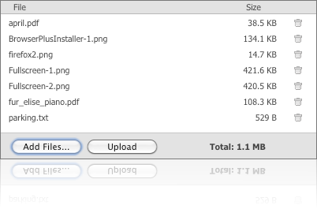

Uploader is a YUI 3 gallery project that uses BrowserPlus to create an advanced file uploader widget. The Uploader allows you to easily create an advanced file uploader widget that supports native drag+drop from the desktop, multiple file selection from a native file selection dialog, multiple simultaneous uploads (3 files at a time), image resizing, archiving (tar, zip) and compression (bzip2, gzip, zip). Files may be filtered by size and mime type (for example, only image files may be selected).

Since Uploader is a UI element, uses BrowserPlus and YUI3, it requires both CSS and JavaScript support files.
<!-- in HEAD --> <link rel="stylesheet" href="assets/uploader.css" type="text/css" charset="utf-8" /> <!-- in BODY --> <script src="http://bp.yahooapis.com/2.7.1/browserplus-min.js"></script> <script src="http://yui.yahooapis.com/combo?3.0.0/build/yui/yui-min.js"></script> <script src="gallery-uploader-min.js"></script>
Once you have the YUI seed file on your page (yui-min.js), you can create a new YUI instance for your application to use and populate it with the modules you need, specified as the first set of arguments to the use method.
YUI().use('gallery-uploader', function(Y) {
// Uploader available and ready for use
});
To use the uploader widget, you need to place a container element in your web page.
<div id="foo"></div>
Within your YUI use() function, create an instance of Uploader.
var uploader = new Y.BP.Uploader({
contentBox: 'div#foo',
width: '400px',
height: '200px',
uploadUrl: "http://example.org/upload.php",
}).render();
Besides the configurations in the code example above, Uploader has a number of other options that can greatly increase upload speed.
| Option | Description |
|---|---|
| maxWidth | Sets the maximum width an image will be scaled to. By default, this parameter is 0 which means images will not be scaled. |
| maxHeight | Sets the maximum height an image will be scaled to. By default, this parameter is 0 which means images will not be scaled. |
Get it on github: http://github.com/lloyd/yajl
You can find Yajl on IRC in the #yajl channel on the Freenode network
or you can subscribe to the Yajl mailing list by sending an email to
yajl@librelist.com (more info on Librelist here)
You can also clone the project with Git by running:
$ git clone git://github.com/lloyd/yajl
Largely because YAJL is event driven, the interface is very concise object oriented C. The interface is not cluttered with data representation, that bit is left up to higher level code. Indeed it should be possible to port most existing JSON libraries onto YAJL if so desired.
feature 2
JavaScript here